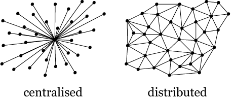

Internet
The Internet is the global system of interconnected computer networks that uses the Internet protocol suite (TCP/IP) to communicate between networks and devices. It is a network of networks that consists of private, public, academic, business, and government networks of local to global scope, linked by a broad array of electronic, wireless, and optical networking technologies. The Internet carries a vast range of information resources and services, such as the inter-linked hypertext documents and applications of the World Wide Web (WWW), electronic mail, telephony, and file sharing.
Vint Cerf and Bob Kahn both created the "Internet" while they were working on project in the U.S Military called the ARPANET (The Advanced Research Projects Agency Network). While working in the project Paul Baran, worked on information distribution. He was working on sending information over the network. He had two ideas , one being the Centralized and other being the Distribution. He found that Centralized was a failure because ,if one node is damaged the whole network was damaged. Where as, the distribution had strong network even if any node dropped. This led to the creation on the network to send information from one place to other. This looked more like mesh. Which later become the nation wide network.
Who Invented The Internet?
If we’re looking for owners, it’s worth finding out who invented the internet.
There’s not really one person to credit. The history of the internet is a complicated one, with many people playing a key role.
Even in the early 1900s, theorists like Nicola Tesla and Marshall McLuhan were envisioning a “world wireless system” that would act like a “global village” where people could access and share information freely.
These ideas began to become a reality in the 60s, when the US Department of Defense created ARPANET, or the Advanced Research Projects Agency Network, which used a new method called “packet switching” to link computers up in a network.
Though packet switching had been developed by American computer scientist Paul Baran prior to its implementation at ARPANET, ARPANET was the first time it was properly funded and put to use.
Today, packet switching – which groups data before transmitting it in packets – is still the primary basis for data communications worldwide.
But the story doesn’t end at the invention of package switching. In the early 1980s, Tim Berners-Lee conceived of a project based on the concept of hypertext (interconnected documents connected via hyperlinks) to facilitate sharing and updating information among researchers at CERN.
In 1989, Berners-Lee saw an opportunity to combine hypertext with the internet. The result was the World Wide Web, an “information space” where documents and other web resources are identified by Uniform Resource Locators (URLs) interlinked by hyperlinks.
The World Wide Web is accessible via the internet, but it is distinct from it – it is a way of accessing information over the medium of the internet (that enormous network of networks). But Berners-Lee doesn’t even own the Web, let alone the internet. In fact, he made a conscious choice to give the World Wide Web to society for free.
Who Owns It?
The short answer is no one and everyone – which sounds paradoxical. Let us explain.
No single person or organisation controls the internet in its entirety. Like the global telephone network, no one individual, company or government can lay claim to the whole thing. However, lots of individuals, companies and governments own certain bits of it.
Every telephone pole, cable, satellite, router, datacentre, etc. is owned by someone. But alone they’re essentially useless – it’s only when they’re connected that they form the internet. In this way, the internet is more of a concept than a physical entity. Though people own the infrastructure that supports it, that infrastructure is constantly changing.
It’s hard to own a concept. Copyright only applies to work that is fixed in tangible form (such as written documents, musical recordings and so on). And, though patents protect specific ideas – not just expressions of them – they are not suitable for broad concepts. The internet is a very broad concept.
Today, packet switching – which groups data before transmitting it in packets – is still the primary basis for data communications worldwide.
As such, the internet isn’t really owned by anyone. Its owner is humanity itself. Which means that you own the internet as much as anyone else.